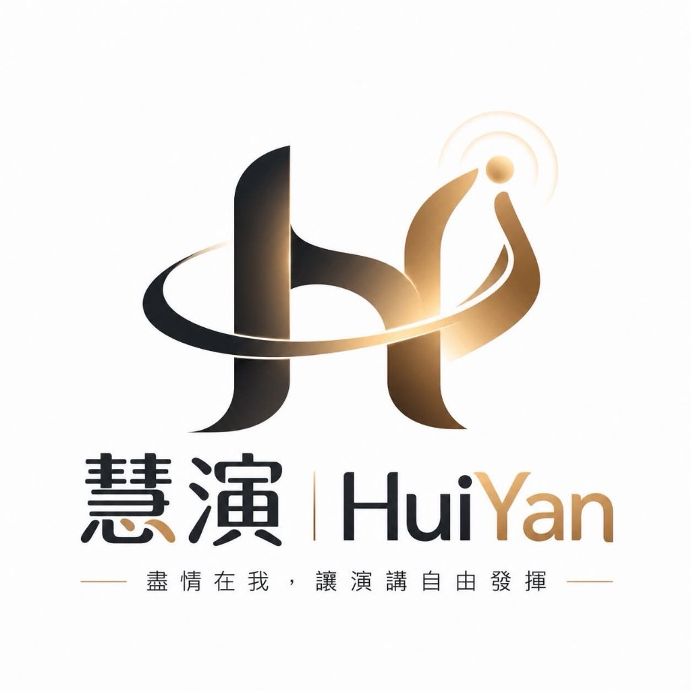
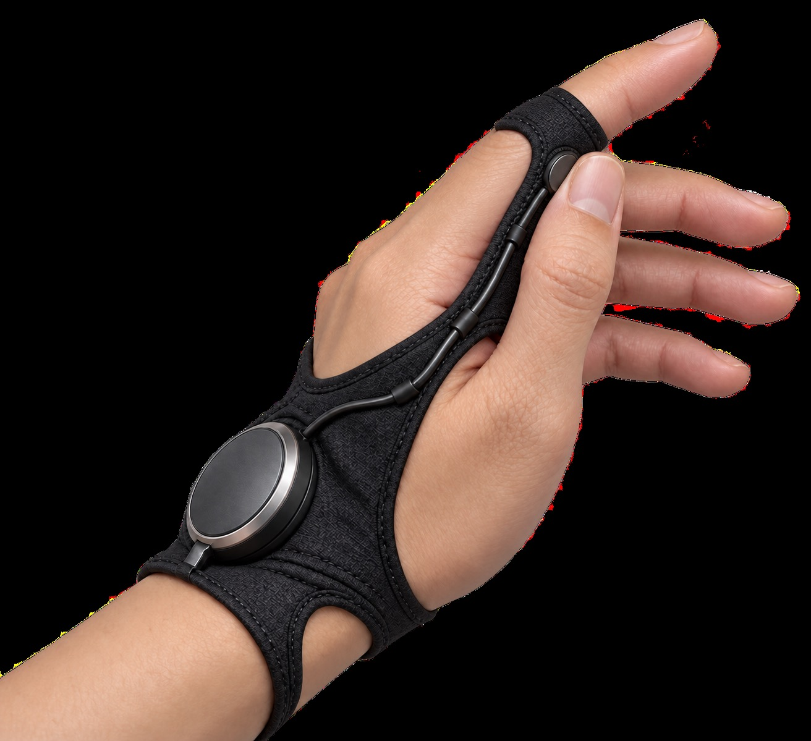

你上台拿著麥克風與教具示範時，是否也恨不得多一隻手？
【慧演 HuiYan】以半指彈性穿戴結合六軸姿態感測與食指微捏致能，讓你不需放下手中展品，微轉手腕即刻流暢控場。

吸收教學與產品展示實戰回饋，將手機/平板直覺體感延伸至大型簡報舞台
拇指微捏食指感應鍵啟動偵測，手腕左右快速旋轉即可控制上一頁／下一頁；亦支援按鍵單擊下一頁、雙擊上一頁雙重保障。
長按按鍵 3 秒即刻切換！透過手腕前後左右微傾直覺引導螢幕游標（Pointer）指點細節，搭配單擊左鍵、雙擊右鍵互動。
未按壓時自然揮手、拿麥克風或操作教具皆完全忽略動作；內建 500ms 候選窗與自動中立姿態恢復機制，回腕絕不誤翻頁。
含 ESP32-C3 主控、MPU-6050 六軸感測、食指微動按鍵、BLE 簡報/滑鼠雙模韌體與透氣半指套。
升級超薄 FSR 薄膜壓力感測器＋未來 XIAO 微型化與免驅動 USB Dongle 接收器支援，零按鍵阻力。
解決長時間 40-60 分鐘演講手汗與衛生需求，快拆式魔鬼氈結構，方便每季定期替換與清洗維護。